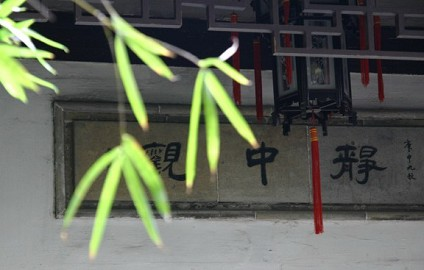

念佛诵经该多少？
冯冯
念佛该念多少遍？诵经该诵多少卷？
 这是很多佛教徒的疑问，去请问法师，答案都是异口同声：“念佛越多越好，诵经越多越好。”，有的法师主张一天念佛号多少千遍多少万次，诵经要诵多少千卷，才有功德，有些法师主张每天念佛诵经多少小时，打坐多少小时，才收修行之效。
这是很多佛教徒的疑问，去请问法师，答案都是异口同声：“念佛越多越好，诵经越多越好。”，有的法师主张一天念佛号多少千遍多少万次，诵经要诵多少千卷，才有功德，有些法师主张每天念佛诵经多少小时，打坐多少小时，才收修行之效。
言之都有理，可是，现代人生活紧张，工作繁忙，上班八小 时，加班几小时，来回交通四小时，煮饭吃饭又几小时，照顾孩子又几小时，应付电话又几小时，上邮局、跑银行、买伙食、补习教育......叫你一天廿四小时都在忙个没完，哪有时间去念佛几小时诵经几千卷？
即使是出家人，也有出家的忙，并不是一般人所想像那么清 闲。出家人天未亮就得起床做早课，然后各有职务，打扫庭园寺院的、砍柴的、挑水的、烧火的、煮饭的、切菜的、洗衣物的、洗濯佛像佛具家具的、清洁住所的、种菜锄地的、写文牍的、讲经的、听经的、知客的、做法事的、摆素筵招待香客的、修缮寺院房舍的、浇浇花的、剪草的......可说比在家更忙，不过，这些劳动原是出家人的修行日课项目。倘若以为出家是清闲得无事可做，成日静坐，或者陪伴大施主下棋吟诗，倾倾佛偈，那却是小说里的故 事。佛印和尚那样闲来无事与苏东坡酬唱，毕竟是传奇中的传奇。僧敲月下门，更是诗人的幻想。实在的出家生涯，就跟当入伍兵差不多，是从早忙到晚，日未出已作，日落而息的，哪有那么风雅去赏月敲月下门幽会情人？每天念
几万次佛号或几千卷佛经，出家人也不可能做得到，因为太忙！
至于仍在求学小朋友、中朋友、大朋友，光是应付学业功课 考试、升学竞争、恶性补习，就已经疲于奔命啦！做完功课，脚都来不及洗，就倒头大睡了，念什么几千卷经？
做劳动工作的人，每天劳苦，筋疲力尽，难得一饱，难得一夜休息，也是疲极倒头就睡着，天不亮爬起来去劳动，叫他念多少千次佛？多少卷佛经？
念经的作用，是坚定信念，摄心正念，念佛是以虔诚心去祈念佛菩萨，以获得其神力庇佑。心诚则灵，佛菩萨并无规定要人每天念多少千句佛号或多少千遍佛经，更没有说，你得念满一万次，菩萨才理睬你，你没念足一万次，就不感应不保佑你。这不是人间世俗的交易，菩萨不是人间的权贵你须拜他，进贡名贵礼金礼物，才包庇你，菩萨都是修成正果的佛，以慈悲有情而被称为菩萨，特别是观音菩萨，许下慈悲宏愿，寻声救苦，普度众生。任何人在苦难中只要虔心祈念观音菩萨名号，不论是一声，两声，三声，百声，千声，都能接通波段，直透观音菩萨，祂都会以祂的无比神力用各种无形方式救苦救难，祂会为众生背负业障消灾。除非是恶业深重太甚，因果不能破。我们持念观音菩萨名号，并不拘于 念多少千遍，只要是真正虔敬持念，祂都会收得到。观音菩萨的“千手千眼”，其实是向四方八面发射的“能”。古人不识科学，只可以“千手千眼”来形容，我们持念菩萨不论是多少次，都可接触到祂神力辐射的圆周，祂立刻会知道，也会很快酌情救苦救难。但是，我们不能祈求祂保佑恶行恶业抢劫杀人强奸贩毒，菩萨只保 佑善行，不保佑恶行，正信的神祇也不会保佑邪行恶行，你不能持念佛号或神名保佑打劫银行或谋杀成功。神佛不会保佑恶行的人，除非已经悔改偿清了恶债又行善，否则念佛念经也无效。
念佛，若是虔诚，只念一句一声也不算少，只要心中虔念， 就有灵感反应，若不诚心，高声唱念一万次，也不算多，若心存邪念，那就念佛十万次也是白念无效。如果只知念经文却又不实行佛经中的戒律修行，那么念经一万一亿卷，也只等于看报纸。举例说，很多人念“心经”，只会念，却又不解其意，更不实行自净其意，只管诵念，心经也就变成毫无意义的“文字相”的文字而已， 念十万次又有何用？
其实，佛经的用意，主要是要人了解佛理开悟，解脱烦恼，佛经并不是咒语，若不实践佛戒佛法，那么念经也等于背诵古文或教科书。持念教科书一万卷而不知不行其理，有何用处？还有，佛理原不是用文字来表达的，佛理不立文字，就不是可以用文字来拘束泥守的，经文是历代弟子增减的文字，很多着了“文字相”，去佛意已远。更别说有不少伪造的经文，若念了那些“伪经”，还 不是等于白念了童话故事书？徒然白费功夫又自己骗了自己！
念佛念经，一句不为少，万遍不算多，就看是否虔诚，是否正信深信，是否实践佛法，流于形式的持念，不虔诚的表演式持念，邪恶动机的祈念，都是白念的。
图片出处
原载《佛网》网站
2000 年 ── 2002 年